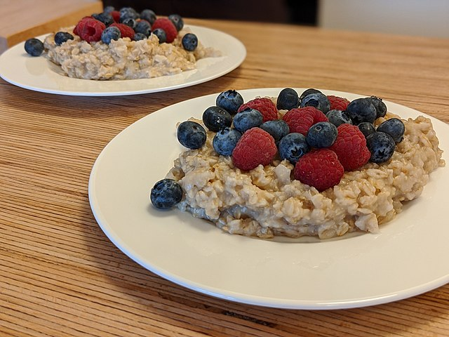

Oatmeal Recipe

The finished dish - Oatmeal with fruits!
Ingredients
- 1 cup of quick cook Steel Cut Oats
- 2.5 cups of water
- 1 cup of frozen wild blueberries
- 1 cup of frozen pomegranate
- 1 sliced banana
Steps
- Bring 2.5 cups of water to a boil.
- Add 1 cup of quick cook Steel cut oats, stir, and then lower the heat to medium-low.
- Add in the sliced banana.
- Let cook uncovered for 5 minutes -or until desired texture is reached-. Stir occasionally.
- Pour into a bowl and add the frozen fruit.
Back to Main Recipes Page